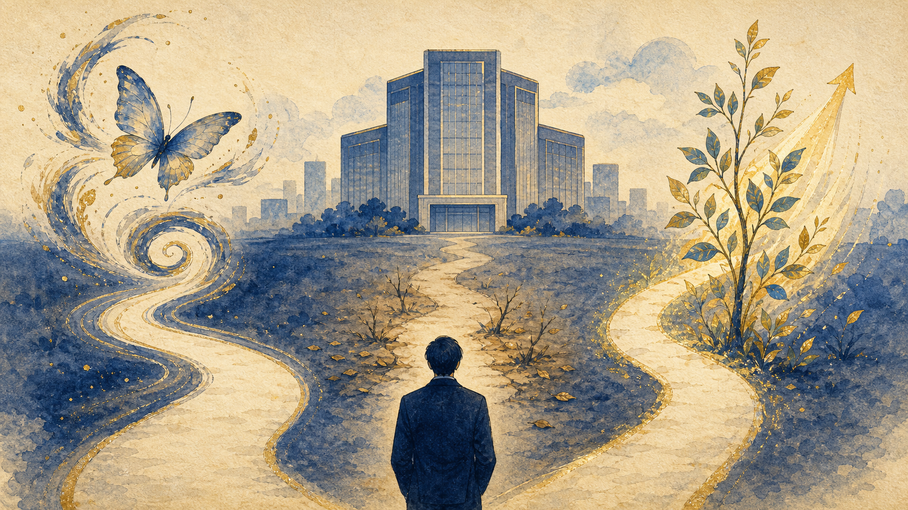
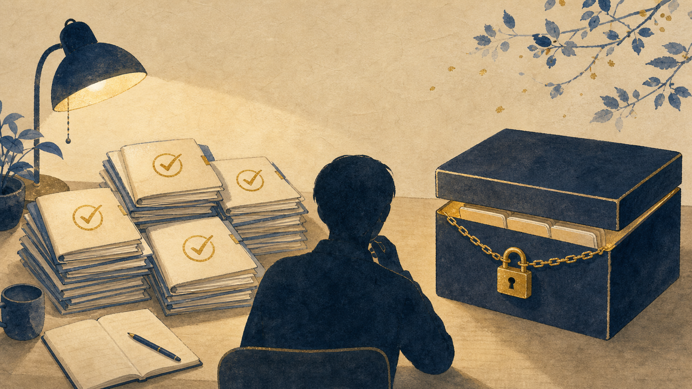

あなたのチャンネルは「アニメを易経で読む」。それの会社版を、ちゃんと当たるか確かめながら作っています。専門用語が多すぎたので、絵で描き直しました。

アニメのキャラを64の型で読むのと同じことを、実在の会社でやります。ある時点の会社を見て、「この先どう変わるか」を読む。占いではなく、変化の兆しを読むという易経の本来の使い方です。
むずかしく考えず、会社の未来を 伸びる・縮む・化ける の3択で当てにいきます。当たったか外れたかがハッキリ分かる＝検証しやすい。

なぜ過去の会社？ もう結末が分かっているから、読みが当たったかすぐ答え合わせできる（＝過去問と答えが揃っている）。
なぜ一部を隠す？ 全部見ながらルールを作ると「後づけ」でズルになる。だから数社は金庫に封印して、ルールが完成してから初めて開けて採点する。これでフェアな実力テストになります。
実際に6社を並べたら、はっきり出ました。
シャープは、その時点では売上が絶好調（過去最高クラス）。なのに、その後転落しました。
ソニーは、その時点で過去最大の赤字。なのに、その後立て直しました。
つまり目先の数字は当てにならない。行き先を決めていたのは、お金の使い方・トップの動き・新しい方向のサイン——ふつうの財務分析が見落とす部分でした。ここが易経で読む価値です。
| 会社（いつの時点か） | 実際どうなった | |
|---|---|---|
| 任天堂（2016・Switch前） | 回復した | 伸びる |
| Nokia（2010・まだ首位） | 転落した | 縮む |
| 富士フイルム（2004・フィルム崩壊） | 別事業へ転換 | 化ける |
| ソニー（2012・大赤字） | 立て直した | 伸びる |
| 🔒 シャープ（2011・なお増収） | 経営危機へ | 縮む |
| 🔒 Netflix（2011・DVD→配信） | 大化けした | 化ける |
🔒＝金庫に封印する2社（フェアなテスト用）。すべて実在の出来事で、情報源のリンクも記録済みです。
この6社と、私がつけた見立てで、次に進んでいいですか？ 次は「読み方のルール作り」に入ります（そこで2社の金庫が閉まります）。
どちらか一言でOKです。むずかしい判断はこちらで引き受けます。